Rectificadora · Mar del Plata
27 trabajospor mes necesita para no perder plata
El dueño lo sabe con números. Hoy cobra un sueldo fijo y armó un fondo de emergencia de 3 meses.
“El taller tiene su plata. Yo pensaba que era mía.”
Consultora de Mar del Plata
Sabé cuánto ganás, delegá con acuerdos claros y armá un equipo que resuelva sin llamarte. Acompañamos a dueños de negocios de 2 a 30 personas.
Sin cargo, por WhatsApp. Te responde una persona del equipo.
+10años acompañando dueños
+100negocios acompañados
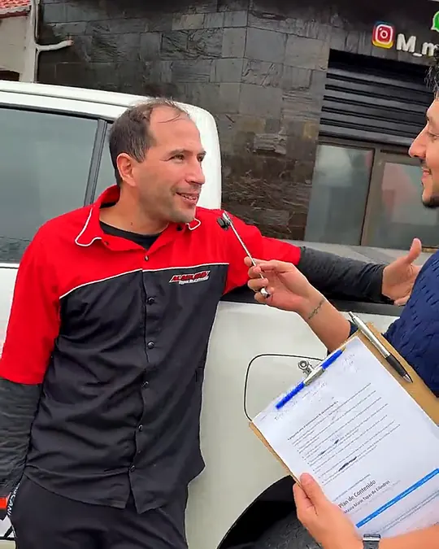


Trabajamos con
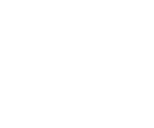
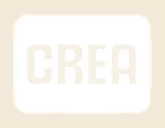
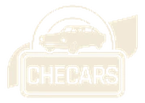
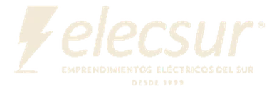
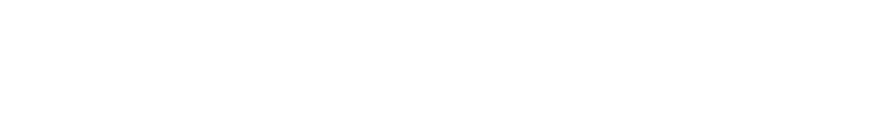
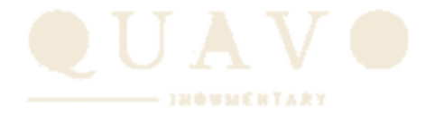
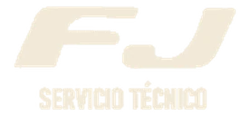
Los cinco problemas que más nos cuentan los dueños, vistos del otro lado.
Hoy: vendés más y te queda menos.
Estado de resultados todos los meses, margen por producto y tu sueldo separado de la caja.
Hoy: todo pasa por vos.
Encargados con autoridad para decidir y procesos escritos que no dependen de tu memoria.
Hoy: cobrás tarde y comprás por sensación.
Caja proyectada semana a semana: ves qué falta y cuándo, y comprás con números.
Hoy: los clientes no llegan parejo.
Un canal de ventas elegido, sostenido y medido, en lugar de esperar el boca en boca.
Hoy: te consultan todo.
Una regla simple: nadie trae un problema sin una posible solución.
Desde la primera semana
Herramientas simples que armamos con vos y quedan en tu negocio. Estas tienen datos de ejemplo.
| En miles de $ | S1 | S2 | S3 | S4 |
|---|---|---|---|---|
| Saldo inicial | 2.400 | 1.950 | 820 | −310 |
| Cobranzas | 3.100 | 2.700 | 2.900 | 4.200 |
| Proveedores | −2.300 | −2.100 | −1.800 | −1.900 |
| Sueldos | — | −1.400 | — | −1.400 |
| Impuestos y fijos | −1.250 | −330 | −2.230 | −300 |
| Saldo final | 1.950 | 820 | −310 | 290 |
Semana 3: faltan $ 310 mil. Hay tiempo para adelantar cobranzas o mover un pago.
Sabés qué semana te va a faltar plata antes de que pase.
Facturación, margen neto, punto de equilibrio, días de cobranza y costo operativo, en una sola pantalla.
| En miles de $ | Octubre | % |
|---|---|---|
| Ventas | 18.400 | 100 |
| Costo de mercadería | −10.300 | 56 |
| Margen bruto | 8.100 | 44 |
| Gastos fijos | −4.300 | 23 |
| Sueldo del dueño | −1.600 | 9 |
| Impuestos | −180 | 1 |
| Resultado neto | 2.020 | 11 |
Cuánto vendiste, cuánto te costó y cuánto ganaste de verdad, con tu sueldo adentro.
Negocios reales, con sus números.
Rectificadora · Mar del Plata
27 trabajospor mes necesita para no perder plata
El dueño lo sabe con números. Hoy cobra un sueldo fijo y armó un fondo de emergencia de 3 meses.
“El taller tiene su plata. Yo pensaba que era mía.”
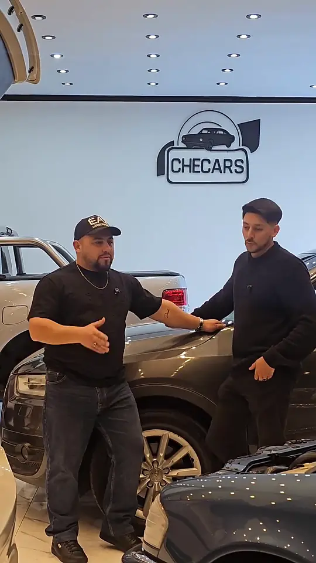
Concesionaria
2 semanasde vacaciones se tomó el dueño
Y la administración siguió funcionando sin él.
“Checars es algo independiente de mí. No somos los dos una misma cosa.”
Distribuidora familiar
3 a 4 horaspor día recuperó el dueño
Una administrativa define los precios con márgenes escritos.
La regla del equipo: nadie trae un problema sin una posible solución.
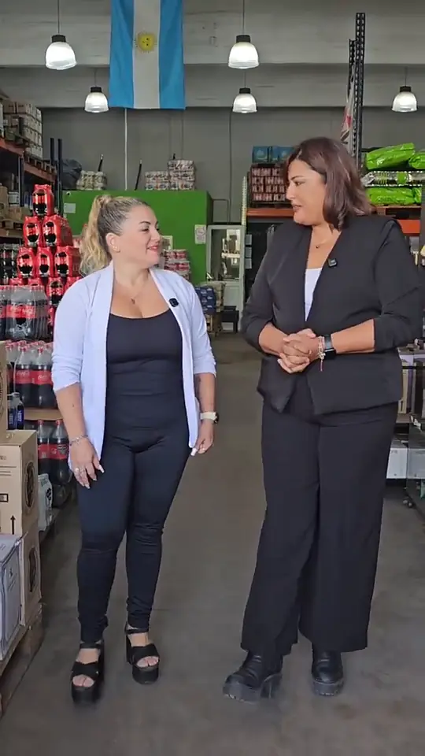
Distribuidora mayorista
“Estábamos creciendo exponencialmente y se desbordaba todo.”
Test de 1 minuto
Cinco frases. Marcá qué tan cierta es cada una hoy en tu negocio y el resultado cambia en vivo.
Tu etapa
En transición
14 de 25
Tu resultado
Lo que más te frena: Finanzas
Decidís sin saber cuánto ganás ni dónde se va la plata. Si crecés así, crece el desorden.
Por dónde empezar
La conversación de diagnóstico
Te responde una persona del equipo, no un bot, y coordinamos cuándo hablar.
Por videollamada o en nuestra oficina de Mar del Plata. Nos contás cómo está hoy y miramos juntos dónde se frena.
Si tiene sentido trabajar juntos, te pasamos una Propuesta de Acompañamiento con acuerdos claros. La decisión es tuya.
La elegimos con vos en la conversación de diagnóstico, según dónde esté el freno.
Trabajamos sobre tus números, tus procesos y tu equipo, al ritmo de tu negocio. No tiene tiempo fijo: pasás de etapa cuando la anterior funciona.
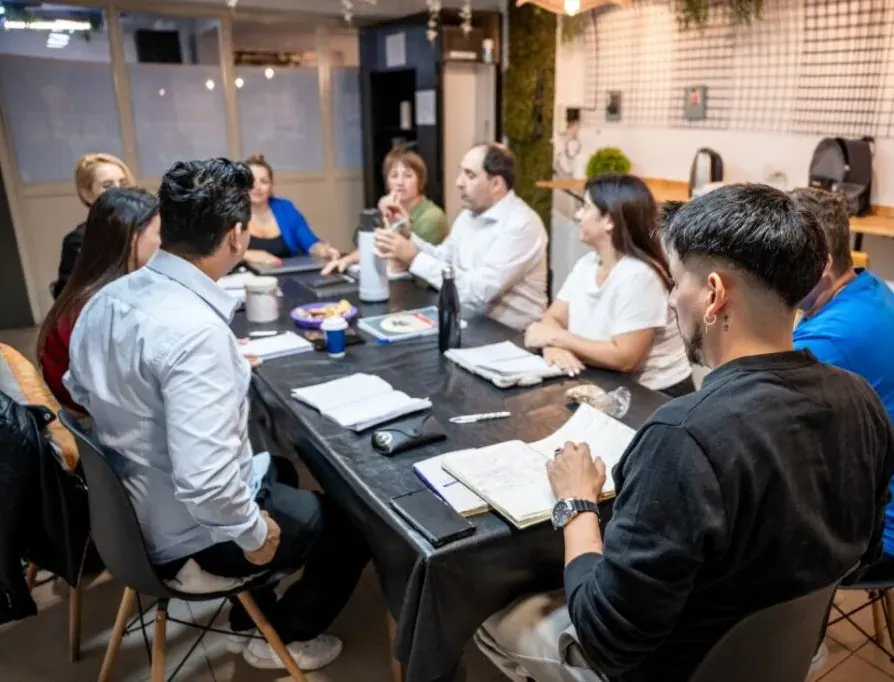
Resolvés lo de tu negocio junto a otros tres dueños que están en lo mismo, con un asesor que guía cada encuentro.

Capacitación para las personas que sostienen el día a día de tu negocio.
Conocé el C·D·ETableros con tus números y tareas repetidas que se hacen solas.
Conocé Fluir SistemasSomos una consultora de Mar del Plata. Acompañamos a más de 100 negocios: distribuidoras, talleres, comercios, concesionarias y servicios.
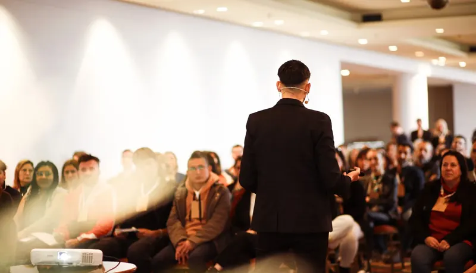
 Antonela Dello RussoFinanzas, KPIs y área comercial
Antonela Dello RussoFinanzas, KPIs y área comercial
 Martín TroncosoEquipos y delegación
Martín TroncosoEquipos y delegación
 Vanesa ChiesaEstructura y organización
Vanesa ChiesaEstructura y organización
Te responde una persona real, sin bots.
Pedir mi diagnósticoGuía gratis
Los tres frenos más comunes y cómo empezar a resolverlos. En PDF, al instante.
Lo que más nos preguntan antes de escribir.
Nos contás cómo está tu negocio y miramos juntos dónde está el freno principal. Si alguno de nuestros programas te sirve, te lo proponemos. Si no te sirve, te lo decimos.
La conversación de diagnóstico es sin cargo. Si después trabajamos juntos, el valor depende del programa y del tamaño del negocio, y queda escrito en la Propuesta de Acompañamiento.
Las dos cosas. La oficina está en Mar del Plata y acompañamos negocios de Argentina y del resto de Latinoamérica por videollamada. El P·A·C tiene grupos online y presenciales.
Trabajamos con negocios de 2 a 30 personas: distribuidoras, comercios, talleres, concesionarias, servicios, gastronomía. Importa más la etapa que el rubro: un negocio que ya vende y depende demasiado de su dueño.
No te dejamos un informe. Trabajamos con vos y con tu equipo hasta que los cambios funcionan, y lo medimos con tus números.
La caja proyectada y el tablero los usás desde la primera semana. Lo demás depende de dónde esté el freno, y lo vas viendo en tus números.
Escribinos y coordinamos la conversación de diagnóstico. Te responde alguien de este equipo.